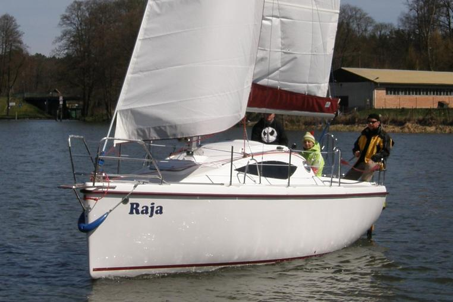
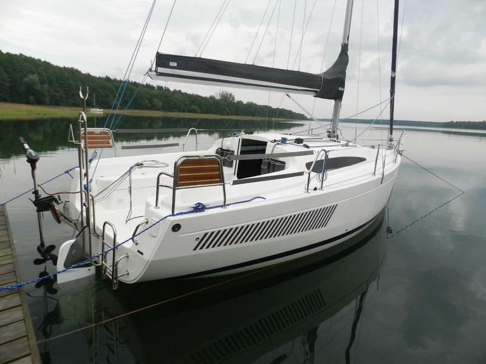
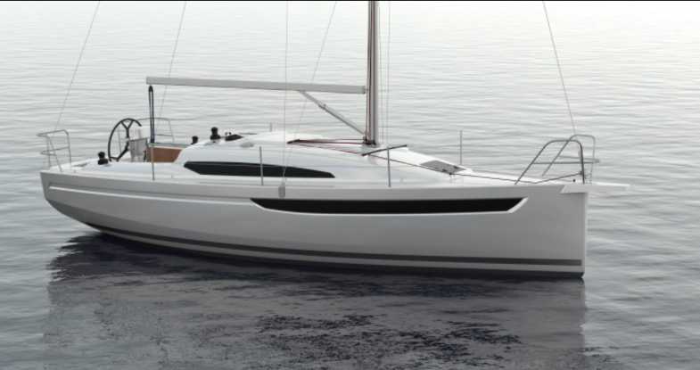

Antila 22
Antila 22 jest jachtem o bardzo nowoczesnej linii, wyglądem przypominającą starszą siostrę Antila 24.W jachcie jest wygodna dwuosobowa koja w strefie dziobowej, a koja podkokpitowa nie jest mniejsza niż w jachcie Antila 24.Dane techniczne
| Długość całkowita | 6,67 m |
| Szerokość całkowita | 2,68 m |
| Maszt | 8,60 m |
| Ilość koji | 4-6 |

Antila 26CC
Nowy design Antili 26CC klasyczny i zarazem futurystyczny to zwrócenie uwagi i podkreślenie poszczególnych detali. Antila 26CC z każdej strony wygląda olśniewająco, szczególnie zachwyca kształt burty z załamaniem kadłuba i linią wody. W jachcie tym, jak w każdym modelu Antila, najważniejsze to bezpieczeństwo i bardzo wysoki komfort zarówno w kokpicie jak i w mesie.Dane techniczne
| Długość całkowita | 8,3 m |
| Szerokość całkowita | 2.9 m |
| Maszt | 10.5 m |
| Ilość koji | 6-8 |

Antila A30
Antila A30 – najnowszy komfortowy jacht którego premiera odbyła się na Targach w Łodzi . Przeznaczony dla osób lubiących sportowe żeglowanie oraz ceniących komfort i nowoczesność. Jacht posiada super właściwości nautyczne co w polaczeniu z komfortem żeglowania spełnia najbardziej wysublimowane oczekiwania. Prawdopodobnie jest najszybszym jachtem w swojej klasie, oferując niespotykany komfort wnętrza i kokpitu. Antila A30 zadowoli najbardziej wymagających żeglarzy Jacht dostępny jest zarówno w wersji kilowej jak i mieczowej. Możliwe jest zastosowanie różnych rozwiązań układu sterowego i napędowego.Dane techniczne
| Długość całkowita | 9,45 m |
| Szerokość całkowita | 3,2 m |
| Maszt | 12,1 m |
| Ilość koji | 2 |

Maxus 34
Maxus 34 zaprojektowany z myślą o jak najlepszej żegludze z przyjaciółmi i rodziną. Przestrzenne wnętrze sprawia ,że każda minuta spędzona na jachcie będzie kwintesencją przyjemności. Jacht ten wykonany jest z zastosowaniem technologii i materiałów wykończeniowych znanych z modelu Northman 1200.Dane techniczne
| Długość całkowita | 11,32 m |
| Szerokość całkowita | 3,40 m |
| Maszt | 13 m |
| Ilość koji | 8+2 |

Maxus 33.1 RS
Maxus 33.1 RS powstał na bazie doświadczeń z produkcji i eksploatacji Maxusa 33, który w ostatnich latach przebojem zdobył rynek. Stocznia Northman stworzyła jeszcze lepszy, piękniejszy i szybszy jacht.Dane techniczne
| Długość całkowita | 10,45 m |
| Szerokość całkowita | 3,20 m |
| Maszt | 12,5 m |
| Ilość koji | 8+2 |

Maxus 26
Maxus 26 jest pierwszym jachtem z nowoczesnej linii evo. Jego atrybutem jest wprowadzenie wyjątkowo oryginalnego kształtu, odpowiadającego obecnym trendom na światowym rynku. Jacht wyróżnia szczególny styl pokładu, zupełnie odmienny od charakterystycznego dla wcześniejszych maxusów. dostawaniem się bryzgów wody i deszczu.Dane techniczne
| Długość całkowita | 8,40 m |
| Szerokość całkowita | 2,82 m |
| Maszt | 11,2 m |
| Ilość koji | 4-6 |